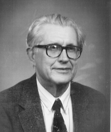

Please note: the AAS Obituaries are temporarily being hosted on this website while their full content is being ingested into the PubPub publishing platform newly adopted by the Bulletin of the American Astronomical Society. When the migration is complete, your existing links will take you to the final, migrated content. Contact peter.williams@aas.org with any questions.
Rein Silberberg (1932-2001)
Rein Silberberg, an internationally recognized authority in cosmic ray and astrophysics research, died of cancer on 31 August 2001 in Silver Spring, Maryland. He was widely admired among his colleagues for his research on the origin and propagation of cosmic rays. He retired from the Naval Research Laboratory (NRL) in Washington, DC in 1990, where he spent virtually his entire scientific career. He continued an active role in cosmic ray research and high energy astrophysics until his death.
Rein was born in Tallinn, Estonia, on 15 January 1932, the son of native Estonians’ Juri and Elizabeth Silberberg. His father was a director and co-owner of a maritime shipping company in Estonia. During and in the aftermath of World War II, the family migrated to Finland, then to Sweden, then to New Brunswick, Canada, and finally arrived in the United States in 1950. Attending school in each of those countries Rein became fluent in their languages and developed a lifelong interest in linguistics
Rein pursued both undergraduate and graduate studies at the Berkeley campus of the University of California. For his graduate thesis research, he joined the group of Nobel Laureate Emilio Segre. He received his MA in Physics in 1956 and his PhD in Physics in 1960. Guided by Gerson Goldhaber, he studied the interactions of the recently discovered antiprotons, using nuclear emulsions for detection.
In 1960, Rein joined the Laboratory for Cosmic Ray Physics (LCRP) at NRL as a National Research Council post-doctoral research associate. The LCRP, established in 1949 by one of us (Shapiro), had developed advanced techniques for processing stacks of thick photographic emulsions. The LCRP included a well-equipped microscopy laboratory for the analysis of particle tracks in nuclear emulsions, useful tools in the investigation of problems in elementary particle physics and cosmic rays. In the early 1960s, Rein and his colleagues continued to investigate the composition of cosmic rays using stacks of thick photographic emulsions flown on high altitude balloons. They established the relative abundances of 3He and 4He in the primary cosmic radiation and subsequently confirmed the value of the mean-free-path of galactic cosmic rays. A prior experiment by the NRL group had determined the relative abundance of the elements lithium, beryllium, and boron among the primary cosmic rays. Those observations had revealed that the "primary" cosmic-ray nuclei must include a substantial component of secondary cosmic rays, which are, in turn, fragmentation products resulting from collisions of parent nuclei in the tenuous gas of the interstellar medium. From the ratio of some secondaries observed to the primary target nuclei, the mean free path of the cosmic rays in the interstellar medium and their residence time in the Galaxy was also deduced.
The presence of secondary particles from collisions of primary cosmic rays with gases in the interstellar medium also provided the opportunity to investigate the question: What do the cosmic rays look like when they are first accelerated? The NRL team (Shapiro, Silberberg and Tsao) embarked on a program to investigate the source composition of cosmic rays. This composition, in turn, provides the principal clues to the origin and acceleration history of the high-energy particles.
Execution of the program on the propagation and transformation of cosmic ray in the interstellar medium required that reaction cross sections for the breakup of relativistic heavy nuclei into lighter ones be developed. No theoretical, and very few experimental, values of these cross sections were available. The NRL team envisioned the need for calculating the yields of all the collision cross sections (elemental and isotopic) for all the cosmic ray ions (from lithium to uranium) and over a broad range of energies. In 1967, guided by the only available measured cross sections (at best a handful), Rein developed a set of semi-empirical equations for deducing the needed cross sections. Over the years, he and one of us (Tsao) collaborated to steadily revise and improve those equations using new measurements from accelerators. The Silberberg-Tsao equations have become an essential and widely used tool for elucidating the source composition and propagation of cosmic rays. Rein was also among the pioneers who showed the importance of cosmic-ray re-acceleration.
Throughout his career, Rein also contributed to the science of radiation effects. His concerns included the biological effects of cosmic rays and other radiation, energy deposition by nuclear interactions, and the formulation of radiation protection requirements for space environments, specifically for a lunar base and for manned missions to Mars. The Silberberg-Tsao semi-empirical equations have been also used in developing optimum shielding against cosmic-ray radiation and also in radiation therapy where heavy ions are used by calculating the energy deposition rate from nuclear interactions. His work on radiation effects also found applications in the computer industry and the defense community.
Theoretical neutrino astronomy was also an interest, and on that basis Rein participated in Project DUMAND (Deep Underwater Muon And Neutrino Detection). Collaborating with one of us (Shapiro) in Project DUMAND, he calculated the prospects of identifying promising celestial sources of high-energy neutrinos.
Rein was a Fellow of the American Physical Society. He authored or co-authored over 200 peer-reviewed papers in the scientific literature. After his retirement from NRL he continued cosmic-ray research with scientists at NRL and Roanoke College in Salem, Virginia.
Rein suffered from a form of ataxia, a progressive neurological disorder, and otosclerosis, but continued his highly productive scientific research in spite of these difficulties. He was selected as the Navy's Outstanding Handicapped employee of the year in 1983. By sheer resolve, Rein did not let his physical handicaps impede his productivity. He served for many years as Associate Director and lecturer in the International School of Cosmic-Ray Astrophysics at the Majorana Center in Erice, Italy.
Rein was an active member of the Estonian community in the Washington. DC area, and relished several opportunities to visit his homeland. He also served as science editor for the Estonian language cultural periodical “Mana”.
Rein was generous and considerate to a fault. Despite this single-minded dedication to research, he always found time to help friends and especially younger scientists. We are fortunate that he was our friend and collaborator. In 1965, on one of his frequent visits to friends in Canada, Rein met and married pharmacist Ene Rammul, also a native Estonian, who fled to Canada with her family just before the Russian invasion of their homeland in 1944. Ene, their son Hugo, daughter Ingrid, son-in-law Kevin and granddaughter Kristy, survive and fondly remember Rein.
Obituary written by: James D. Kurfess (Naval Research Laboratory), Maurice M. Shapiro (University of Maryland, College Park), Chen Hsiang Tsao (Roanoke College, Salem, Virginia)
BAAS Citation: BAAS, 2002, 34, 1379
SAO/NASA ADS Bibcode: 2002BAAS...34.1379K